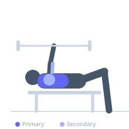

Exercise guide / Wide-Grip Decline Barbell Bench Press
Wide-Grip Decline Barbell Bench Press
A decline barbell bench press using a grip wider than shoulder-width. The wide grip on the decline angle combines maximum lower pectoralis major stretch with reduced range of motion at the elbow, allowing heavy loading of the sternal pec fibers. The wide grip shifts the demand away from the triceps, placing greater emphasis on chest contribution throughout the pressing movement.
Primary muscles
pectoralis major sternal
Secondary muscles
triceps lateral head
deltoid anterior
Stabilizers
pectoralis minor
infraspinatus
Equipment
Standard Barbell
Adjustable Bench (Incline / Decline)
Power Rack (Squat Cage)


Starting position
- Lie on a decline bench (15–30 degrees) with feet secured. Take a wide grip on the barbell — pinkies at or near the outer ring marks. Unrack and hold above the lower chest.
Setup
- Set the decline to 15–30 degrees. Secure feet. Use collars. The wide grip should be comfortable — do not go beyond the outer grip marks.
Steps
- Step 1: Unrack with a wide grip. Bar positioned above the lower chest.
- Step 2: Lower the bar toward the lower chest. Elbows flare wider than a shoulder-width grip would allow.
- Step 3: Touch the lower chest and press back to lockout, following the bar's natural arc.
- Step 4: Keep the upper back pinched and feet secured throughout.
Coaching cues
- Lead with the chest, not the elbows — the wide grip already does the shoulder work
- Keep the shoulder blades tight to protect the shoulder at the wide position
Breathing
- Inhale before descent, exhale on the press.
Range of motion
- Full range from lower chest to lockout. The wide grip slightly shortens the elbow's range of motion.
Tempo
- 3-1-2-0
Common mistakes
- Grip too extreme — beyond the outer rings creates shoulder and wrist injury risk
- Feet unsecured on the decline bench
- Excessive elbow flare that places the shoulder in a compromised position
Safety
- Wide decline pressing stresses the shoulder joint — start lighter than standard decline press
- Use a spotter for heavier sets
- If wrist discomfort occurs, slightly narrow the grip
Training
- strength: 3–6 reps
- hypertrophy: 6–12 reps
- strength: 4–5 sets
- hypertrophy: 3–4 sets
- Rest: {'strength': 180, 'hypertrophy': 120}